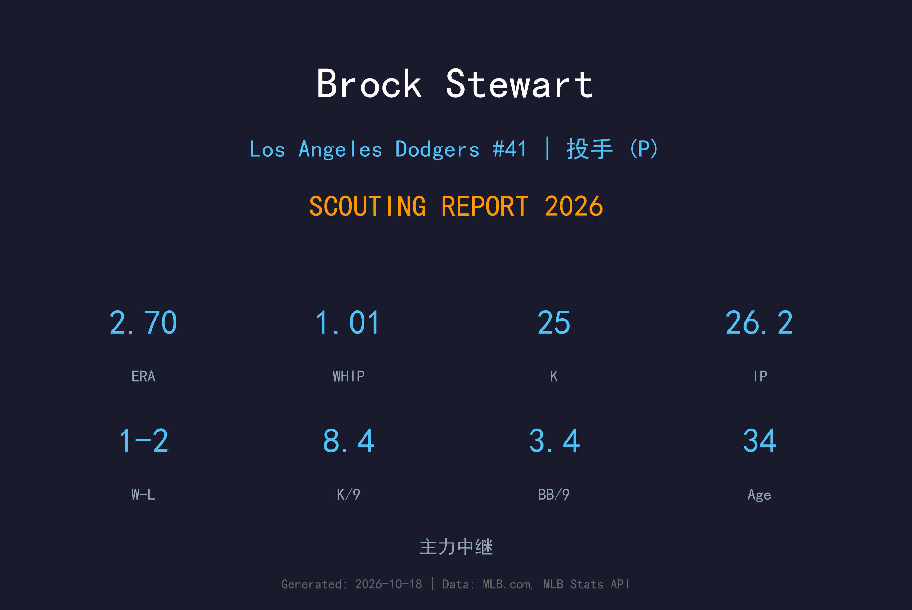
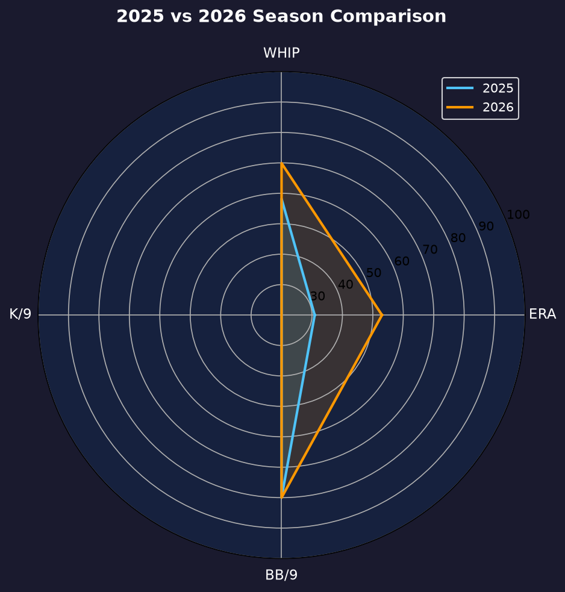
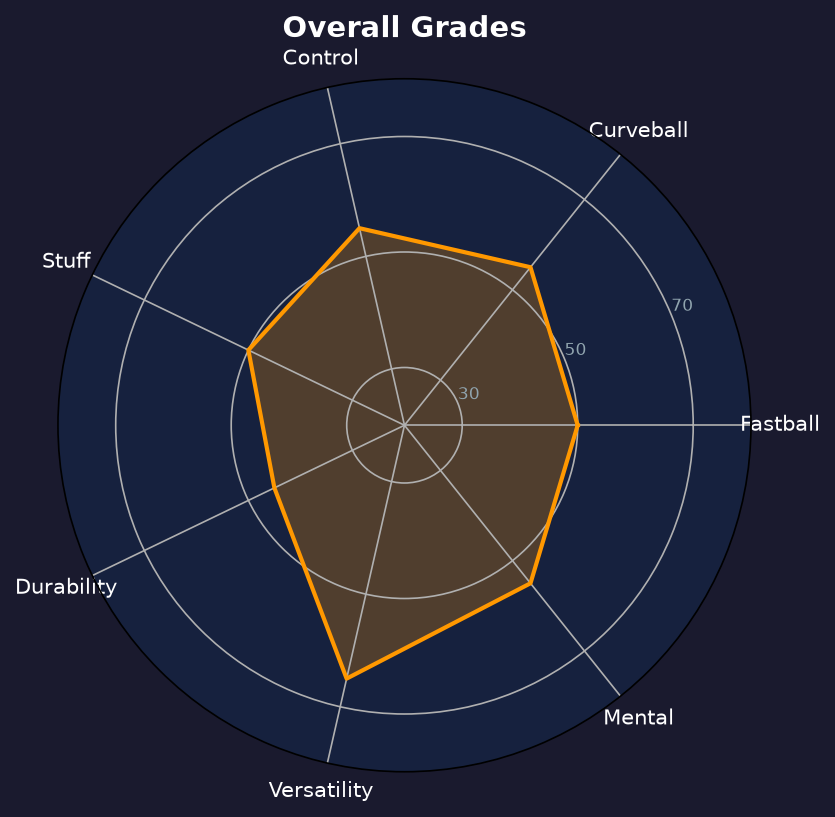

Los Angeles Dodgers #61 | 右投后援 | 右投 / 左打 | 多功能牛棚

Brock Stewart 是道奇牛棚的资深多功能右投，能长中继、能 setup、偶尔还能先发。2026年他保持健康，为球队提供了宝贵的牛棚深度。
2026年他出赛28场（含1场先发），缴出2.70 ERA、1.01 WHIP，26.2局25次三振，9次 hold 仅1败。与2025年伤病缠身的4.91 ERA 相比，这是一次漂亮的健康反弹。
34岁的 Stewart 已经进入生涯后期，但他的速球与曲球组合仍具竞争力。教练团欣赏他的 versatility——他能吃2-3局的长中继，也能在第八局短期出战，是 roster 构建中"哪里需要补哪里"的胶水型球员。
2016年在道奇完成 MLB 首秀，之后辗转多队，2023年重返洛杉矶。
28场出赛、2.70 ERA、9次 hold，从2025年伤病中完全恢复。

| 赛季 | G | W-L | ERA | IP | SO | BB | WHIP |
|---|---|---|---|---|---|---|---|
| 2025 | 4 | 0-1 | 4.91 | 3.2 | 3 | 2 | 2.18 |
| 2026 | 28 | 1-2 | 2.70 | 26.2 | 25 | 10 | 1.01 |
2025年仅4场出赛（伤病），2026年工作量增至28场，效率与量同时回升。
球速：93-96 mph
评分：B
Stewart 的主战球种，速度不顶尖但指令良好，能在好球带四边游走。
球速：78-81 mph
评分：B
他的招牌变化球，下坠幅度大，常用于两好球后诱使打者挥空。
球速：88-91 mph
评分：B-
近几年新增的中间球种，用于制造 soft contact 与打断打者节奏。
Stewart 的最大资产是 versatility。他能一人吃下2-3局长中继，也能在 setup 角色短期出战，这种"瑞士刀"属性让 Roberts 在排牛棚时拥有极大的灵活性。9次 hold 就是这种价值的直接体现。
3.38 BB/9 与 8.44 K/9 的组合中规中矩，不算 elite 但也足够稳定。他的球路没有明显裂口，打者难以从他身上打出一发定江山的长打——26.2局仅3轰。
从伤病回归到28场出赛，Stewart 的2026年是一场胜利。2.70 ERA、1.01 WHIP 证明他完全恢复了健康。在道奇牛棚人才济济的情况下，他依然抢下了9次 hold，显示教练团对他的信任。

用多功能性弥补球质平庸的老将牛棚胶水
B 级 / veteran 深度
道奇 2026 季后赛战绩：NLDS 3-1 晋级、NLCS 0-4 止步。
| G | IP | ERA | WHIP | SO | BB | H | HR |
|---|---|---|---|---|---|---|---|
| 3 | 2.0 | 4.50 | 1.50 | 2 | 1 | 2 | 0 |
Brock Stewart 的2027赛季取决于两个因素：健康与牛棚竞争。如果他能保持2026年的出勤率，他仍会是道奇牛棚 depth 的重要一环；但若年轻人（如 Henriquez）持续成长，他的位置可能被压缩。
2026：28场、2.70 ERA、9HLD——伤后完整回归
2027：目标维持 30+ 场出赛，向 veteran mentor 角色过渡
2028+：生涯尾声，或转型教练/球探
Brock Stewart 出生于伊利诺伊州 Normal，是道奇自家培养的投手——2014年被道奇选中，2016年登上大联盟。他的职业生涯辗转蓝鸟、光芒等多队，2023年重返洛杉矶，成为球队牛棚的深度拼图。
Stewart 以 versatility 与职业态度著称。无论是长中继、setup 还是偶尔的先发，他都毫无怨言地接受任务。这种 team-first 的精神让他在多支球队都赢得了教练团的好评。
场外的 Stewart 热爱高尔夫球，是道奇队内高尔夫社的活跃成员。他的职业生涯已进入后期，但他仍在为每一次登板全力以赴。